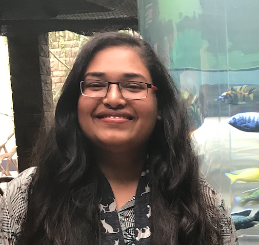

I am a graduate student of computer science at The George Washington University. I have a keen interest in artificial intelligence and my research area is machine intelligence and cognition. I established Meraki with the goal to come up with innovative...
Shruti Gupta

I found myself having a keen interest in data science, it fueled my enthusiasm and desire to learn, study as well as create and contribute. As a curious and hardworking person, I believe I’d also be able to make a contribution in my own way and grow with it. I want to work in a firm with a professional work-driven environment...
Harsh Kaushik

I am now pursuing a bachelor's degree in Electrical and Electronics Engineering. I am primarily
interested in Machine Learning and Designing. I am now researching on Internet of Things and
Artificial Intelligence. As an inquisitive and dedicated individual, I'd choose to work for a company
where the team has a desire to develop products that can have a meaningful impact.